TOP DESTINATIONS
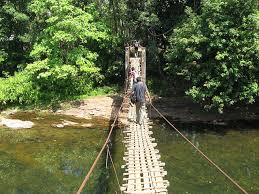 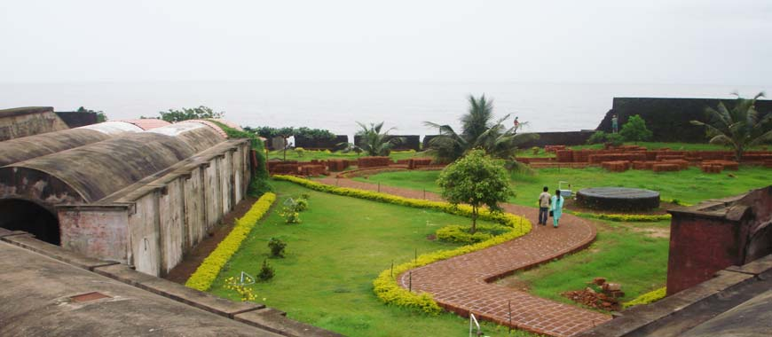
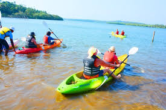
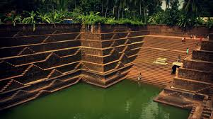
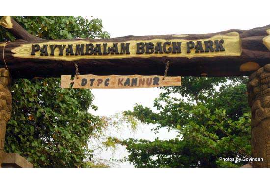
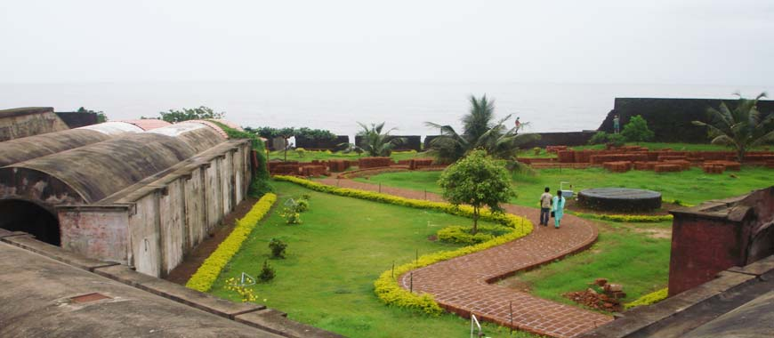
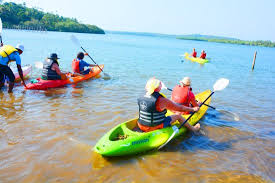
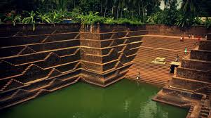
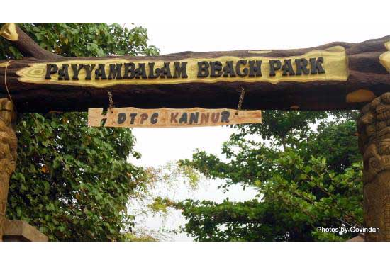
Kannur, also known as Cannanore, is a beautiful city on the northern side of Kerala State in India. This place is famous for Communist politics and temple festivals. Kannur is the administrative headquarters of the district of Kannur. It is known as Land of Looms and Lores.
Kannur is one of the 14 districts along the west coast in the state of Kerala, India. The town of Kannur is the district headquarters and gives the district its name. The old name, Cannanore is the anglicised form of the Malayalam name "Kannur". Kannur district is bounded by Kasaragod District to the north, Kozhikode district to the south, Mahé district to the southwest and Wayanad District to the southeast. To the east the district is bounded by the Western Ghats, which forms the border with the state of Karnataka (Kodagu district). The Arabian Sea lies to the west. Paithalmala is the highest point in the Kannur District (1,372m). Enclosed within the southern part of the district is the Mahé district of the Union Territory of Puducherry. The district was established in 1957. Kannur is the sixth-most urbanised district in Kerala, with more than 50% of its residents living in urban areas. Kannur has an urban population of 1,640,986, which is the second largest in Kerala after Ernakulam district.[2][3]
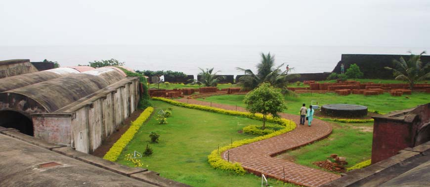
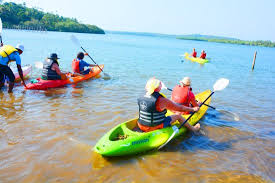
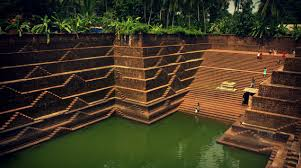
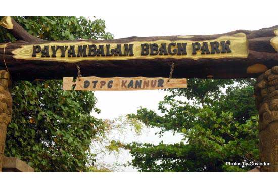